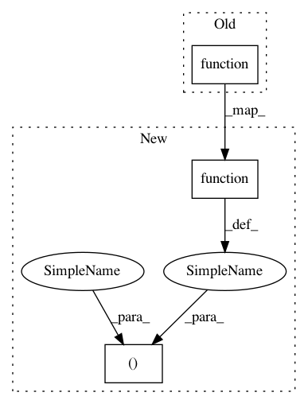

f99f633725815635a1cf24aa2dd70bdb094ed7aa,tests/keras/backend/backend_test.py,,cntk_func_two_tensor,#,51
Before Change
xc = KC.placeholder(ndim=len(x_shape))
yc = KC.placeholder(y)
output_cntk = getattr(KC, function_name)(xc, yc, **kwargs)
return KC.function([xc, yc], [output_cntk])
def cntk_func_three_tensor(function_name, x_shape, y, z, **kwargs):
xc = KC.placeholder(x_shape)
After Change
xc = KC.placeholder(ndim=len(x_shape))
yc = KC.placeholder(y)
output_cntk = getattr(KC, function_name)(xc, yc, **kwargs)
return output_cntk, KC.function([xc, yc], [output_cntk])
def cntk_func_three_tensor(function_name, x_shape, y, z, **kwargs):
xc = KC.placeholder(x_shape)
In pattern: SUPERPATTERN
Frequency: 3
Non-data size: 3
Instances
Project Name: keras-team/keras
Commit Name: f99f633725815635a1cf24aa2dd70bdb094ed7aa
Time: 2018-08-13
Author: ybliang8@gmail.com
File Name: tests/keras/backend/backend_test.py
Class Name:
Method Name: cntk_func_two_tensor
Project Name: keras-team/keras
Commit Name: f99f633725815635a1cf24aa2dd70bdb094ed7aa
Time: 2018-08-13
Author: ybliang8@gmail.com
File Name: tests/keras/backend/backend_test.py
Class Name:
Method Name: cntk_func_single_tensor